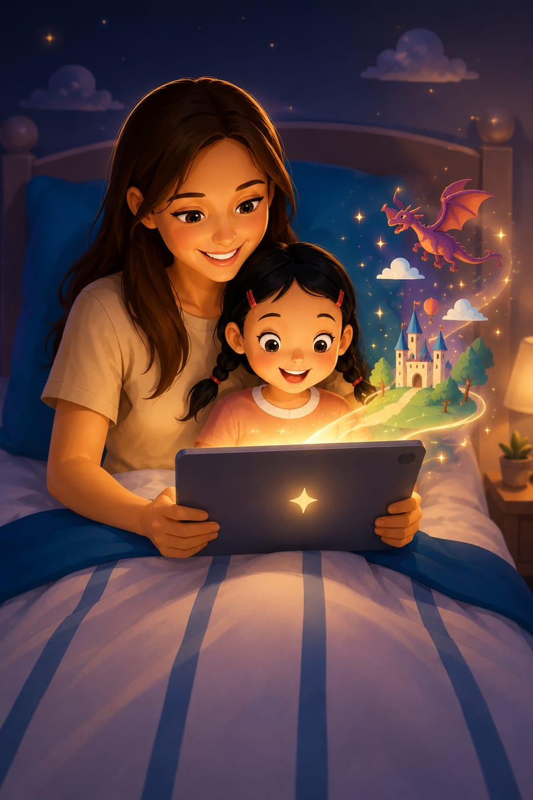

Every child has a favourite book, the one they ask for again and again. It's rarely the fanciest one. It's usually the one that feels like theirs. What if the next favourite was made by you, about them?
No app to download to see the idea. Try it below.
Children don't pick favourites by the cover. They pick them by how familiar and personal a story feels: the character who reminds them of themselves, the little detail only they'd notice. Little Story Book Maker builds that feeling in on purpose, every time.
Their name, their world, whatever they're obsessed with this week.
Little Story Book Maker writes a story built entirely around them.
And when it does, create the next one.
Not a character who is a bit like them. Actually them.
Favourite animal, favourite person, the pet, the treehouse, whatever is real to them.
This month's favourite doesn't have to be next year's. You can always make a new one.
You pick what it's about together, so it already feels like theirs before it's even written.
It costs nothing to find out if this one becomes the favourite.
You've bought books that sat on the shelf. This one takes a few minutes to make, and it's built around exactly what your child loves right now, so the odds are already in its favour.
Create personalised stories whenever you need them and make reading part of your routine.
Get startedKeep creating personalised stories throughout the year as your child's interests and learning needs change.
Get annual accessOne payment gives you lifetime access, so you can keep creating their next favourite as they grow.
Get lifetime accessMonthly and Annual are free to cancel anytime, no questions asked.
₦38,500 costs less than sixteen months of the Monthly plan. Today's favourite might be about dinosaurs. Next year's might be about starting a new school. Either way, you can make it.
You tell it your child's name, what they love, and what the story should be about. Little Story Book Maker writes it around exactly that, so it reads like it was made for them, because it was.
Yes. You are the account holder. Little Story Book Maker is built for parents to create for their children, with no child-facing sign-up or public profile.
Little Story Book Maker is designed for ages 2 to 10, and grows with your child as their interests and vocabulary change.
Yes. Monthly and Annual are straightforward subscriptions with no lock-in. If you'd rather never think about it again, Lifetime is a single payment with nothing to cancel.
Make another. Every story is quick to create, so you can keep trying different angles, their favourite animal, a value you want to teach, a new word, until one sticks.
You don't have to search for the perfect book anymore. You can create one, about them, built to become the story they ask for again and again.